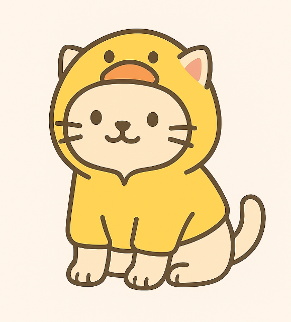

5 Razones para vestir a tu gato este invierno
Mucha gente piensa que vestir a las mascotas es innecesario, pero en ciertas situaciones, una prenda de ropa puede ser muy beneficiosa para nuestros amigos felinos. Aquí te damos 5 buenas razones.
1. Protección contra el frío
Aunque los gatos tienen un pelaje natural, las razas con poco pelo como el Sphynx, o gatos mayores con un sistema inmunológico más débil, agradecen una capa extra de calor durante los meses más fríos.
2. Ayuda en la recuperación
Después de una cirugía, una prenda ajustada puede evitar que el gato se lama la herida, funcionando como una alternativa más cómoda al cono isabelino.
3. Reduce la ansiedad
Al igual que las mantas de peso para humanos, una prenda con una ligera presión puede tener un efecto calmante en gatos ansiosos, especialmente durante tormentas o viajes.
4. Mantiene la casa más limpia
Si tu gato pierde mucho pelo, un chaleco o polerón puede ayudar a contener parte de ese pelo, manteniendo tus muebles y ropa un poco más limpios.
5. ¡Estilo y diversión!
Seamos honestos, ¡un gato con un disfraz de pato es adorable! Siempre que el animal esté cómodo y la ropa sea segura, no hay nada de malo en añadir un toque de estilo y diversión a su vida.
Volver al blog